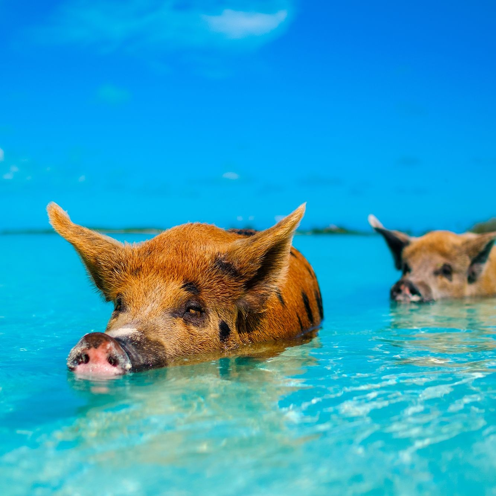
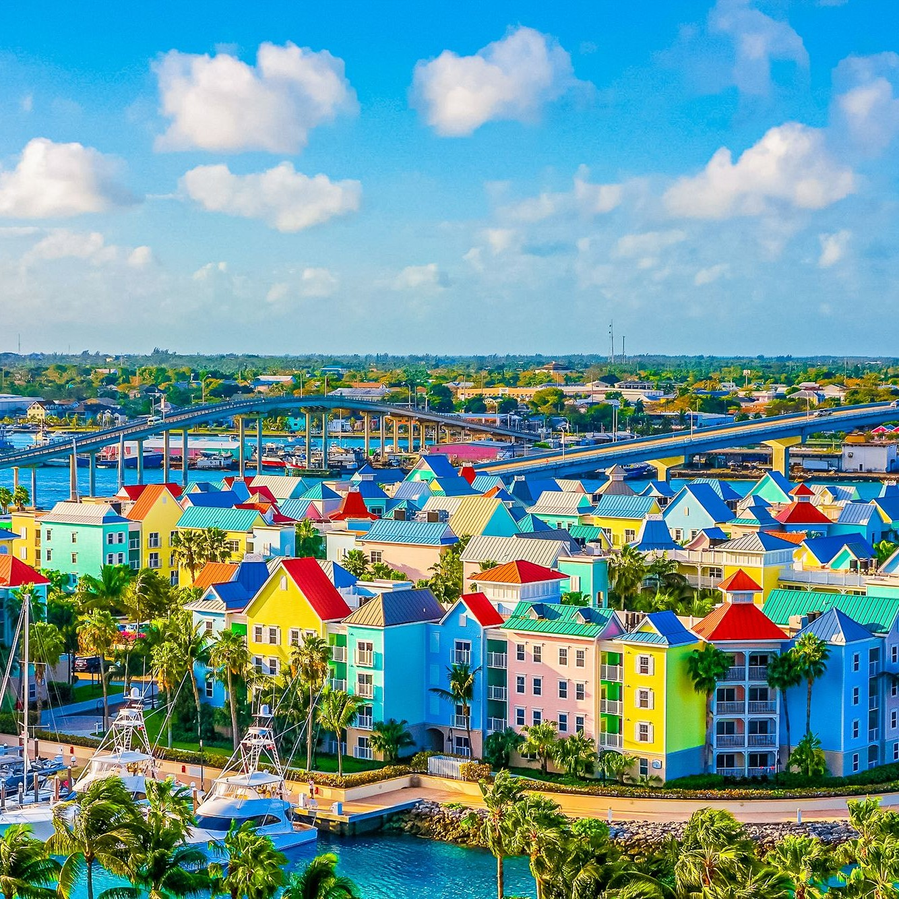

The Bahamas
Sun, Sand, and Serenity: A Journey through the Beautiful Bahamas
My Bahamian adventure begins in Nassau, the bustling capital of the Bahamas. The colorful architecture of the city's historic district instantly charmed me. Strolling along the lively streets, I couldn't resist trying some authentic Bahamian cuisine at local eateries. Conch salad and cracked conch quickly became my favorites. A visit to the iconic Straw Market was a fantastic opportunity to shop for handmade souvenirs and interact with friendly locals.
 A short ferry ride away lies Paradise Island, home to some of the world's most luxurious resorts. My stay at one of these resorts was a taste of paradise itself. With pristine beaches and world-class amenities, I indulged in water sports, spa treatments, and fine dining. The highlight, however, was exploring the incredible Atlantis Paradise Island resort, complete with a massive water park and marine habitats teeming with exotic sea creatures.
Heading south to the Exuma Cays, I had a truly unique experience—swimming with pigs! The uninhabited Big Major Cay is home to these famous swimming pigs, and I couldn't resist the chance to frolic in the crystal-clear waters with these adorable animals. Snorkeling in the nearby Thunderball Grotto, a filming location for the James Bond film "Thunderball," was another thrilling adventure.
Harbour Island, known for its breathtaking pink sand beaches, was my next stop. The sight of the soft, rosy sands against the turquoise sea was absolutely mesmerizing. I spent my days basking in the sun, swimming, and beachcombing. The island's charming colonial architecture and laid-back atmosphere were the perfect complements to its natural beauty.
 A short flight took me to Bimini, a haven for fishing enthusiasts. Ernest Hemingway was a frequent visitor, and I couldn't resist trying my hand at deep-sea fishing. The thrill of reeling in a marlin was a memory I'll cherish forever. Exploring the Bimini Road, an underwater rock formation often associated with the lost city of Atlantis, added an air of mystery to my visit.
My Bahamian journey continued on Andros Island, famous for its blue holes. These underwater sinkholes are a paradise for divers and snorkelers. Descending into the depths of Dean's Blue Hole, the world's deepest blue hole, was an awe-inspiring experience. The vibrant marine life and crystal-clear waters made it a dive to remember.
My final stop was Grand Bahama Island, where I explored the pristine beauty of Lucayan National Park. Kayaking through the mangrove swamps and caves was a peaceful and surreal experience. I also had the chance to engage with the local culture by attending a Junkanoo festival, a lively Bahamian tradition filled with colorful costumes, music, and dance.
As I bid farewell to the Bahamas, I couldn't help but feel grateful for the stunning beauty, warm hospitality, and unforgettable experiences I had encountered on this island adventure. The Bahamas had stolen a piece of my heart, and I was eager to share the magic of this Caribbean jewel with my readers.
I hope this journey through the Bahamas has transported you to a world of sun-soaked beaches, crystal-clear waters, and vibrant culture. Stay tuned for more exciting adventures as I continue to explore the captivating Americas. Until then, may your travels be filled with the serenity and beauty of the Bahamas!